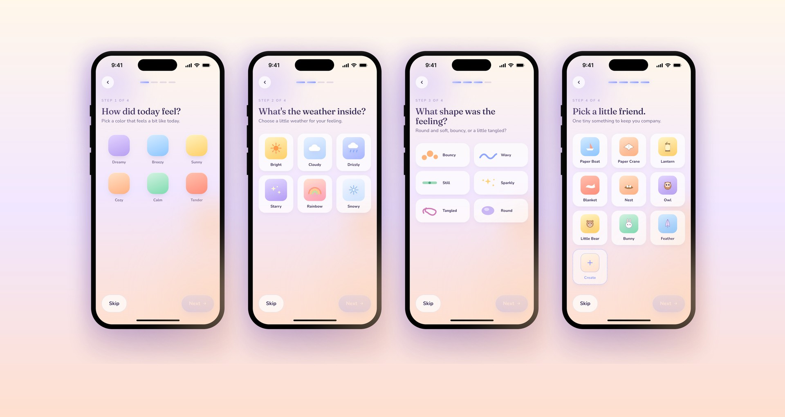
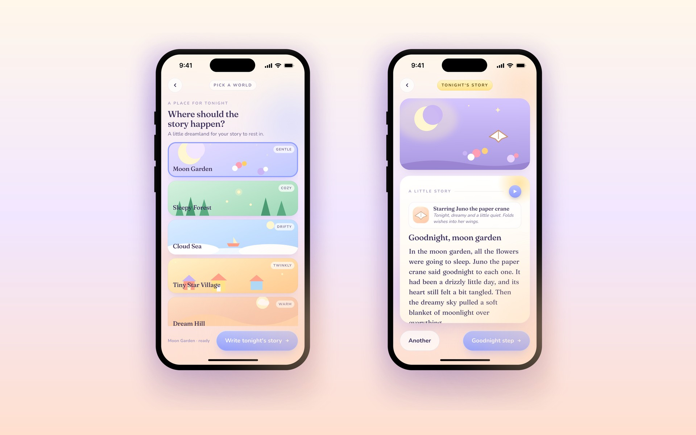
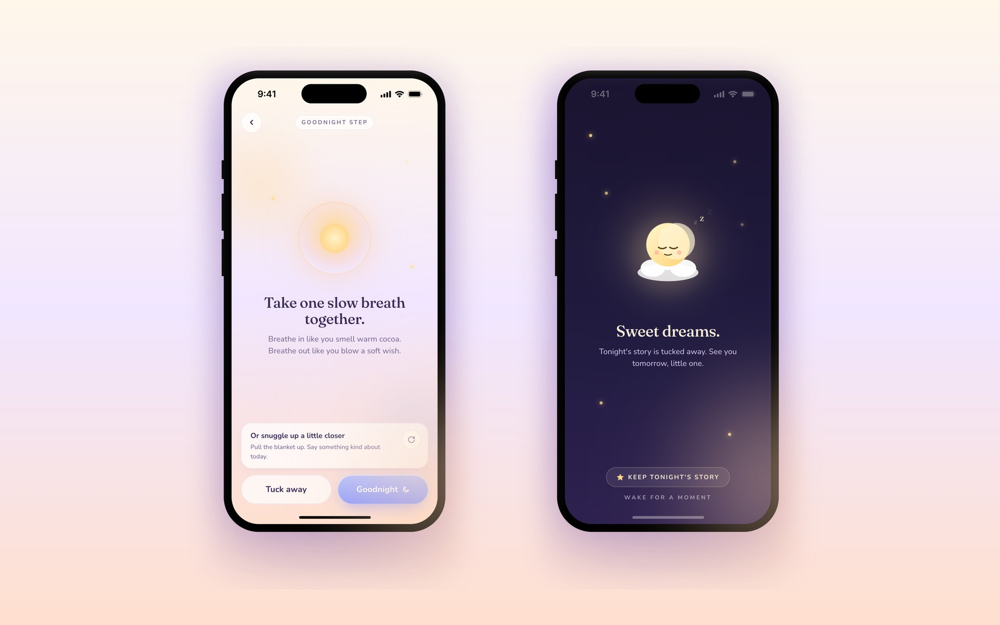
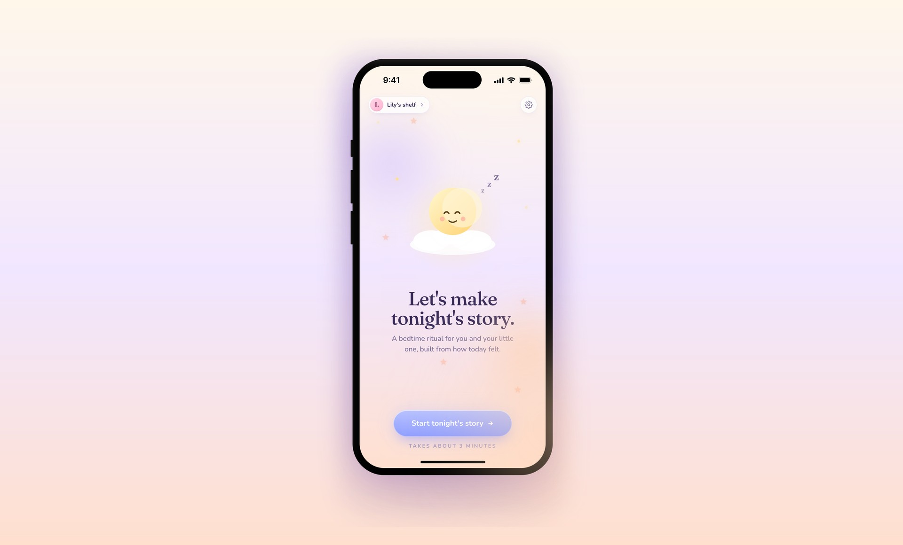

Personalized bedtime app that turns how today felt into an illustrated story for kids ages 3 to 8. Four wordless picks, one dreamland, and a goodnight ritual, about three minutes a night.
Personal
2026
Solo, design and build
HTML + Tailwind
Claude Code
Recognition
Problem
Bedtime is repetitive by design; children find comfort in the familiar. But the story itself rarely catches what the child actually carried into bed. The day's small frustrations, the new feeling without a name, the question never asked. Parents reach for the same five books, or skip the story entirely.
Generic AI storytellers don't fix this. A chat box at bedtime is the wrong instrument. A pre-reader can't type, and a tired parent doesn't want a prompt window. The product that meets this moment has to be quieter than that.
Insight
A three year old can't say she felt overwhelmed at preschool. But she can point to a color. She can say it felt like rain. She can pick the shape of the feeling out of six soft drawings, and she has a small companion in mind even if she can't name why. Four nonverbal picks, a color, a weather, a shape, and a little friend, make the day legible to a system without ever asking the child to put a feeling into language.
The ritual
Seven moments. The first four are inward: how today felt, answered one tap at a time. Progress dots keep the child oriented, every step can be skipped, and words are never required.
Color, weather, shape, and a little friend. Each screen asks one soft question and accepts one tap for an answer.

The fifth moment is imaginative rather than reflective: where should tonight's story happen? Five dreamlands, then the story arrives, written for tonight.

One night
Tonight's picks compose the story's emotional palette. Lavender reads as dreamy, rain becomes a drizzly little day, a tangled shape leaves a heart still a bit tangled, and the paper crane takes the starring role. The same dreamland can hold many nights; the difference is the child. "In the moon garden, all the flowers were going to sleep. Juno the paper crane said goodnight to each one. It had been a drizzly little day, and its heart still felt a bit tangled. Then the dreamy sky pulled a soft blanket of moonlight over everything."
In the working build, ten handwritten templates, two per dreamland, stand in for the model. The four picks pour into their placeholders and shift the voice, not just the nouns, so every night reads differently while the language stays hand tuned for reading aloud. Short sentences, concrete images, picture book vocabulary.
Design language
Six pastels carry the day's color picks, but every button is periwinkle. Coral is activating; periwinkle is sleepy. Bedtime gets the sleepy one. Fraunces holds the storytelling and Nunito holds the interface, one narrative voice and one interface voice. Each of the five dreamlands owns its own time of day, so no two bedtimes look alike: a deep night moon garden, a dusk forest, a daylight cloud sea, a butter gold star village, a sunset hill. Animations stay slow, five to eight seconds for the floats, six for the breathing orb. Nothing demands attention.
Principles
Four choices the product is built from. Each one closes a door other AI apps leave open.
No chat, no model picker, no regenerate. A brief writing pulse and the line "written for tonight" prove the story is fresh. The intelligence is the medium, never the interface.
A pre-reader can't type, but she can point. Every required input is a tap on a colored chip, a soft icon, a face. Words are an output, not an input.
One color, one weather, one shape, one friend, one world, one story. Not options to compare; picks to commit to. Choice fatigue is the enemy of bedtime.
The last screen is a dim twilight with no call to action, no streak, no tomorrow's story. A bedtime app that fights for attention at bedtime has already lost the brief.
The goodnight
After the story, one gentle action closes the night: a slow breath together, a small wish, a goodnight wave. Then Sleep Mode dims the screen and stops asking. The only choice left is a quiet one, keep tonight's story or let it go.
The goodnight step breathes with the child, and Sleep Mode ends the session on purpose. No app should win an argument with sleep.

Kept stories return as a constellation on the welcome screen, each star back where its night left it. The ritual recurs because the night before kept something worth coming back to, not because the app demands it.

Reflection
StoryBloom is an AI product where the AI never appears. The hard problem wasn't generating a story, it was the input: a three year old cannot type a prompt, so the interface had to make a feeling legible in four taps. Once the day was legible, everything downstream got quieter. The story arrives without a chat box, the ending asks for nothing, and the writing stays hand tuned. Building it taught me that the craft in AI products is deciding what the system needs to know and how a person hands it over, and that the most childlike interface in the product took the most adult restraint to design.
Powered by Claude Haiku 4.5